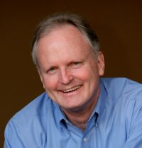
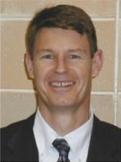

Our Team
Gregg J. Pawlowski, PCC, CLTMC
Fundraising and Executive Leadership Development
Gregg's passion is to equip non-profit leaders to fully fund their mission. He's worked with organizations across the country to increase their fundraising capacity, helping to raise millions of dollars to increase mission impact. As a fundraising coach, consultant, trainer and speaker, he specializes in fundraising and leadership development, having served scores of successful leaders in the non-profit and for profit sectors.
His diverse background is a blend of over 30 years of non-profit and business executive leadership experience, leading organizations to higher performance. Combining his passion and experience with being a Professional Certified Coach (PCC), he is uniquely qualified to help leaders and their organizations achieve accelerated fundraising results. He is the founder of BreakThru Fundraising and works with a broad variety of ministries and non-profits across the country. He also serves as a Leadership Coach at the Terry College of Business MBA and Executive MBA program's at the University of Georgia.
He served as the Executive Director of The Dove Children's Hospital Movie Channel, a non-profit entertainment organization and grew it to serve over 1.0 million hospitalized children annually. As Director of the Center for Business Excellence, a training center providing "best practices" business and success principles, he coached and trained non-profit and business leaders to start and grow their organizations for accelerated results and mission impact. Also under his leadership, he directed national sales teams to consistently exceed revenue goals with responsibilities of up to $75 million annually in diverse markets.
Gregg completed his Professional Certified Coach requirements through Corporate Coach U and is currently working to achieve his Master Certified Coach (MCC) credential. He has also received his Certified Leadership and Talent Management Coach (CLTMC) certification and Certified Career Management Coach (CCMC) certification from ICF-approved coach training organizations. Additionally, he is a member of the Association of Fundraising Professionals (AFP).
Born in Buffalo, New York, Gregg loves to learn, having attended Rochester Institute of Technology's School of Business and countless seminars and workshops. He is very happily married to his wife Josie, has six adult children and six grandchildren, and resides in Sugar Hill, Georgia. He enjoys family time, being a handyman, reading, camping and hiking.
Click here for Gregg's downloadable biography.
Click here to connect with Gregg Pawlowski on LinkedIn.
Kevin D. Monroe
Board Development, Organizational Sustainability, and Marketing
Kevin is passionate about nonprofits and works with leaders and boards to help them maximize the impact they make in their communities and with their clients. Through his work Kevin helps organizations build engaged and empowered boards that advance the missions of the nonprofits they lead. He also helps organization develop sustainability strategies for long-term impact. He provides an array of marketing services to clients helping them refine their messages and connect with donors, volunteers, and clients.
Kevin offers non-profit leaders valuable tools for championing change and building partnerships in their community through his training and leadership. Since 2002, he has conducted training for over 5,000 leaders from grassroots faith-based and community organizations in 22 states and Puerto Rico. His training areas of influence include sustainability, board and leadership development, effective collaboration, and the role of faith-based social service delivery.
As an expert of Charitable Choice Legislation, Kevin provides training and technical assistance to state agencies and faith-based organizations. This training explains how faith-based organization can accept federal funding and remain true to their faith-based identity and mission.
Kevin is a Professional Member of the National Speakers Association and speaks nationally on a variety of topics related to leadership, sustainability and community engagement. He is a graduate of Mercer University and is currently completing a Master's of Organizational Leadership at Gonzaga University.
He resides in Woodstock, GA with Gwen, his wife of 28 years, and they are parents to two adult children. Kevin enjoys reading, spending time with the family and friends.

Bob Lewis
Strategic Planning, Senior Leader Coaching, Team Development and Change Management
Bob is dedicated to equip and empower Executive Directors, CEO's and their teams to achieve breakthrough results through stellar execution of strategic and operational initiatives.
He specializes in strategic planning and decision-making, senior leadership coaching, senior team development and change management consulting for clients in both the non-profit and for profit sectors. Bob excels in translating vision, mission and strategy into fully executable operations plans for accelerated performance.
Bob spent over 30 years in corporate America in two very different industries - high technology and human resource services. Bob participated in the creation of AT&T Information Systems, Inc. and directed the activities of a consulting and sales division responsible for $95 million in annual revenue.
As the chief executive of the DBM Consulting group (a Division of Drake Beam Morin, Inc) he guided the efforts of a national consulting team specializing in organizational change and career development consulting, executive coaching, and leadership team facilitation. Most recently, he served as Executive Vice President for Eastern U.S. operations at Lee Hecht Harrison, responsible for the P&L performance of over 50 practice offices representing $110 million in annual revenues.
Additionally, Bob co-authored the book Living on the Leading Edge of Change: A Leader's Guide to Transition Management.
Bob has served as Charter President of the Rotary Club of Dunwoody, a member of the Atlanta Rotary Club and has served on the Board of Advisors of the Metro Atlanta Chamber of Commerce, the Board of Directors of the American Red Cross-Atlanta Chapter and the Board of Advisors of Souly Business. He is a devoted father and grandfather and has a variety of recreational interests.
Dean Harbry, PCC
Board of Directors and Executive Leadership Development
Dean is a Professional Certified Coach, credentialed through the International Coach Federation. He brings a long history of visionary leadership and managerial leadership coaching with executives from non-profit, banking, finance, technology, manufacturing, media and sales. As a trusted advisor, he partners with executive directors and organizational leaders to develop leadership influence and leverage human resources.
Dean has held a variety of professional responsibilities inside prominent firms and educational institutions including Ronald Blue & Co, Bank of Ireland and the University of Pittsburgh. By his own admission, the most effective time in developing coaching skill was his seventeen year stint as a missionary in Youth With A Mission. Through leading diverse teams and working in cross-cultural settings, Dean acquired the needed competencies to focus on other's success and the success of team objectives. These are the same skills needed in today's non-profit environment.
Dean holds a B.A. in Organizational Management and is completing a PhD at International University of Professional Studies in "Professional Coaching and Human Development." His passion is to assist the organizational leader to excel by focusing on professional management skills, emotional intelligence, and influence behaviors relative to boards of directors, donors, peers, and direct reports. He is a dedicated runner, completing more than 20 marathons to date. His is married with four children and lives in Atlanta, Georgia.

Dr. Sidney A. Webb, PCC
Board Development, Business Planning, Negotiation and Conflict Resolution
Dr. Sid Webb has a passion: to use his three decades of experience in founding, leading, and training nonprofit organizations, combined with his award-winning doctoral-level research on the governance of nonprofits, to help your organization deliver a profound impact on the community it serves.
Sid has over twenty years of seminar leader experience with organizations such as Walk Thru the Bible, Winning With Encouragement, Ministry Ventures, and BEST Network. He has developed and presented nonprofit "best practice" seminars around the country and has developed coaching curricula on all areas of practice (including board development, fundraising, logic models, business plans, and administration). Sid loves to deliver his highly effective training event for nonprofit boards, Focused Board.
Sid founded CoreFoundations, a 501(c)(3) nonprofit created to empower local communities to legally establish and operate off-campus religion classes for public school students (for credit). Sid helped local communities in Georgia and South Carolina to grow their programs from only three to over 100.
Sid's work and travels have taken him around the US and the world, including Canada, Spain, Russia, Portugal, Germany, England, Costa Rica, Panama, Peru, and many countries in the Middle East.
Born in Texas to an Air Force family, Sid received his B.A. from Florida State University and his masters and doctoral degrees from Dallas Theological Seminary. His wife is a manager at Operation Christmas Child's Atlanta distribution center and their daughter is a linguistics instructor in China.
In his free time you will find Sid at Starbucks, on a mountain trail, or in his kayak. His personal goal in life is to visit every Starbucks on the planet.